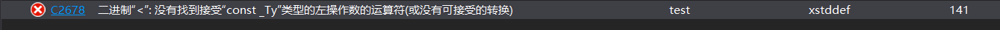

故事背景：最近的需求需要把一个结构体struct作为map的key，时间time作为value，定义：std::map<struct, time> _mapTest;
技术调研：众所周知，map是STL库中常用的关联式容器，底层实现就不多提了是平衡二叉树，今天主要关注的是map的KEY值
map有四个参数，第一个为_Kty就是key，第二个_Ty就是value,第三、四都有默认值，所以在一定的条件下可以不填
问题阐述：std::map<struct, time> _mapTest；编译报错

这就是map中第三个参数的作用，提供一个less函数，比较key值间的大小，从而构建二叉树，有人问了为什么基本类型就不需要呢，这是因为基本类型可以直接进行大小比较
解决办法：
这就是map第三个参数的作用了
需要我们提供一个比较大小的仿函数，仿函数就是类似于函数的类，不过大都是重载了一些操作符如'（）'号、'<'号等
完成仿函数如下：
struct hash_function
{
bool operator ()(const customize &c1, const customize &c2) const
{
if (c1._id != c2._id)
{
return c1._id < c2._id;
}
if (c1._sum != c2._sum)
{
return c1._sum < c2._sum;
}
return false;
}
｝
实际运用：std::map<struct, time, hash_function> _mapTest;